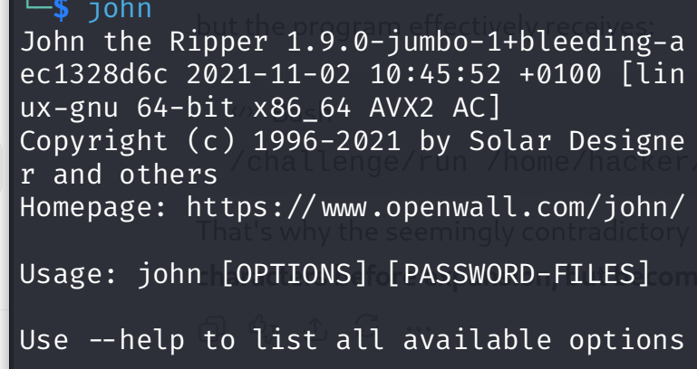
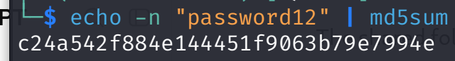
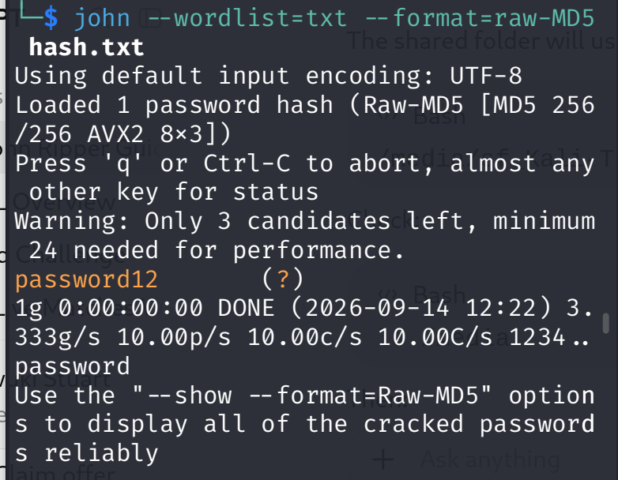
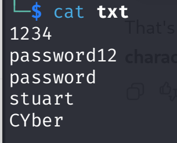
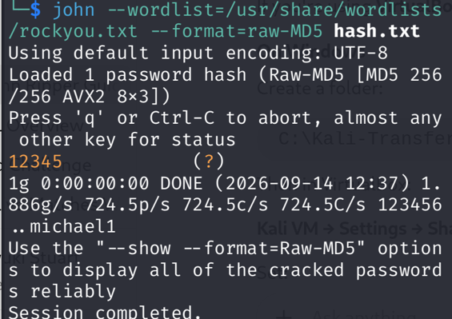
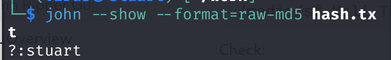

Password Hashing
Understand how passwords can be transformed into hash values and why hashes are used for password storage.
CYBERSECURITY LABORATORY
A hands-on cybersecurity project demonstrating password hashing, dictionary attacks, wordlists, session recovery, troubleshooting, and password auditing using John the Ripper on Kali Linux.
01 — PROJECT
This project documents a controlled cybersecurity laboratory using John the Ripper to understand how password auditing and dictionary attacks work.
The laboratory uses test credentials and hashes created specifically for educational purposes. The goal is to understand the technical process behind password auditing rather than targeting real accounts or systems.
During the laboratory, different John the Ripper options, password wordlists, hash formats, session management features, and troubleshooting techniques were explored.
02 — OBJECTIVES
Understand how passwords can be transformed into hash values and why hashes are used for password storage.
Learn how password dictionaries such as RockYou can be used during controlled password auditing.
Understand how candidate passwords are tested against a target password hash.
Investigate common errors involving wordlists, sessions, recovery files, and hash formats.
03 — PROCESS
John the Ripper does not simply "decrypt" a password hash. It tests candidate passwords and compares the resulting hashes with the target hash.
A test password is selected for the laboratory.
The password is converted into a test MD5 hash.
John reads candidate passwords from a wordlist.
Candidate hashes are compared with the target.
If a matching hash is found, the candidate password has been identified.
04 — HASH GENERATION
$ echo -n "password12" | md5sum
c24a542f884e144451f9063b79e7994e
The resulting hash was stored in
hash.txt and used as the target
for the controlled password-auditing experiment.
05 — COMMANDS
Important commands and options used during the study.
Displays the installed John the Ripper version. Remember JTP comes pre-installed in Kali
john --versionDisplays the password-hash formats supported by the JTP build.
john --list=formatsUses a specified wordlist to test candidate passwords against the target hash.
john --format=raw-md5 --wordlist=test-wordlist.txt hash.txtUses the RockYou wordlist for the controlled laboratory experiment for the study.
john --wordlist=/usr/share/wordlists/rockyou.txt --format=raw-md5 hash.txtDisplays passwords that John has already recovered.
john --show --format=raw-md5 hash.txtResumes a previously interrupted John session.
john --restoreDisplays information about the current John session.
john --status06 — RESULTS
The test password was successfully identified from the controlled test wordlist.
password12
$ john --show --format=raw-md5 hash.txt
c24a542f884e144451f9063b79e7994e
1 password hash cracked, 0 left07 — EVIDENCE
Screenshots documenting the different stages of the controlled laboratory.






08 — TROUBLESHOOTING
A mistyped wordlist path prevented John from locating the required file. The correct Kali wordlist directory was verified before rerunning the command.
A John recovery file was locked by an existing or interrupted session. Running processes were checked before continuing the laboratory.
John reported that there were no password
hashes left to crack. The stored result was
checked using the --show option.
09 — LEARNING
Password hashes are not the same as plaintext passwords.
Dictionary attacks depend heavily on the quality of the wordlist.
Weak passwords can be vulnerable to offline password-auditing techniques.
John the Ripper provides useful session and recovery features for long-running tasks.
Troubleshooting file paths and session files is an important part of practical cybersecurity work.
Security tools should only be used against systems and credentials where authorization exists.
RESPONSIBLE SECURITY
This project was performed in a controlled laboratory environment using test credentials and hashes created for educational purposes.
John the Ripper should only be used for password auditing when you have explicit authorization. Attempting to recover passwords from systems or accounts without permission may be illegal and unethical.